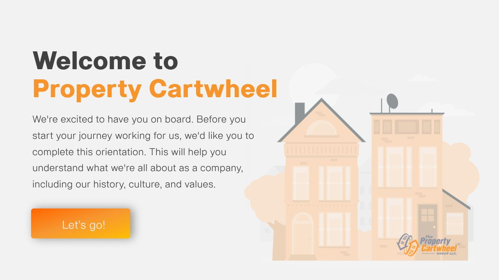
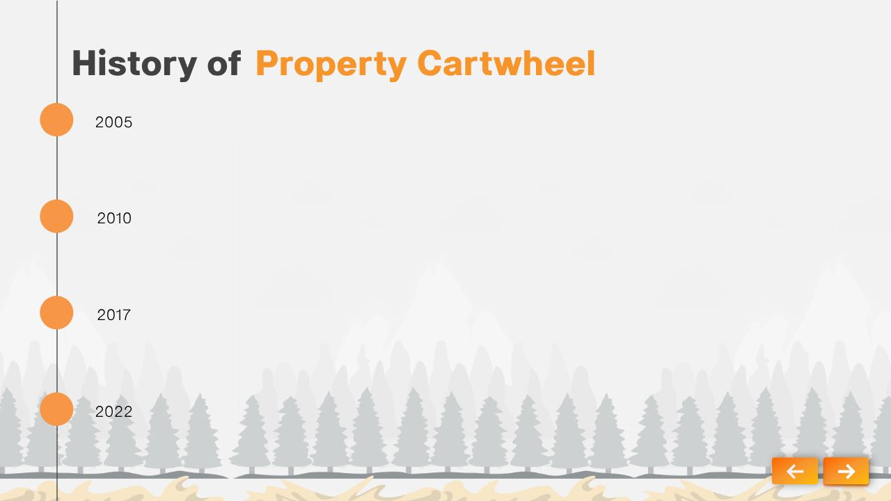
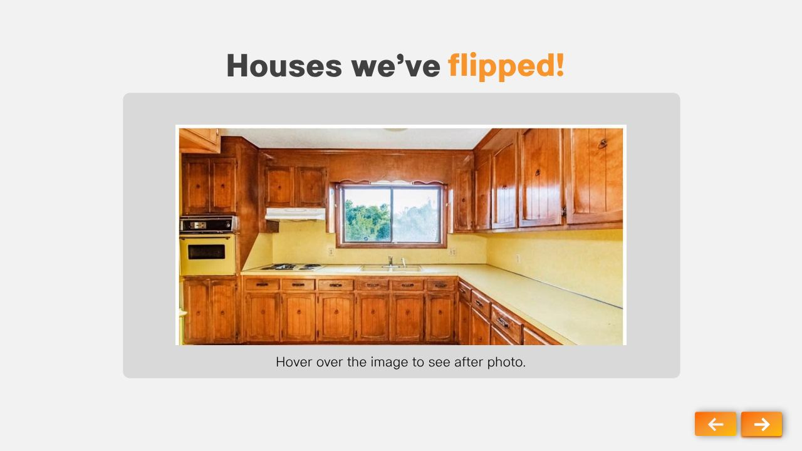
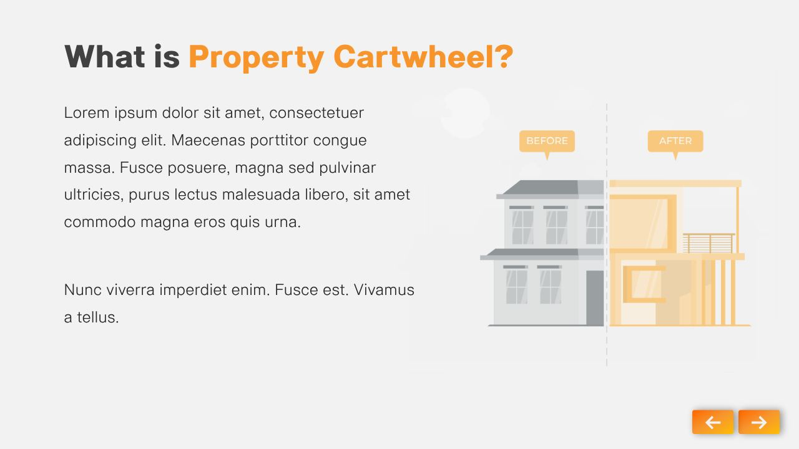
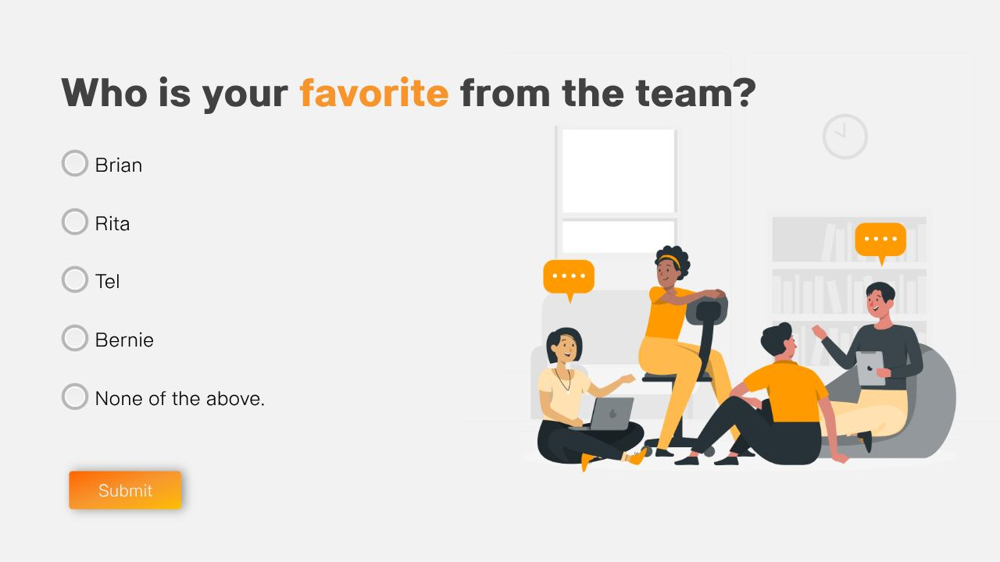

Blended Onboarding Program for Leads Managers
New Leads Managers at a real estate investment company learned the job by watching others. I redesigned their onboarding into a structured, blended program and built a Storyline eLearning prototype to show the client what it would look like.
Opens in a new tab. This is a pitch prototype, so some body text is placeholder copy.

The problem
Leads Managers qualify incoming property leads and route them to the acquisitions team. Training was informal: new hires shadowed someone and picked things up as they went. That meant slow ramp-up, inconsistent habits, and a lot of repeated explaining by the people who already knew the job.
I had done the Leads Manager job myself, so on this project I was both the subject matter expert and the instructional designer.
Goals
Approach
A five-part curriculum
I mapped the role into five stages that build on each other, from "what is this job" to "keep getting better at it."
| Stage | What it covers |
|---|---|
| Role overview | Main responsibilities (review, qualify, assign, update), the LM scorecard (speed, accuracy, qualified leads), daily checklist |
| Foundation | Lead sources, buying criteria, the "MEAT" test for whether a lead is hot or not, intro to Freedomsoft and PropStream |
| Leads management | Start-of-day checklist, handling new, previous-day and older leads, email and SMS replies, declined-offer calls |
| Admin tasks | Photo uploads, Freedomsoft support, Monday report, end-of-day report |
| Reinforcement | Spaced follow-ups after training: monthly and quarterly call evaluations and notes-quality reviews |
Matching each topic to the right format
Not everything needs a trainer. I sorted the content by one question: can someone learn this without an expert in the room?
- eLearning for stable, standard content, like defining MEAT or the role overview. These are things nobody wants to re-explain to every new hire.
- Live sessions and shadowing for skills that need an expert to show and give feedback, like handling calls.
- Learner and process guides (PDF), gathered into one "LM playbook" with a new branded template, so answers are easy to find on the job.
A prototype to win buy-in
Instead of describing the eLearning in a proposal, I built a short company-orientation course in Storyline so stakeholders could click through it. It shows the visual style and the kinds of interactions the full program would use.




What I delivered
- Program proposal: goals, onboarding map for four roles, five-part LM curriculum, delivery formats, development plan
- Storyline 360 orientation prototype, published for web
- Job aids for the LM playbook, such as a lead profile checklist, a daily tasks guide, a statuses and workflows guide, a glossary, and an explainer on the MEAT criteria